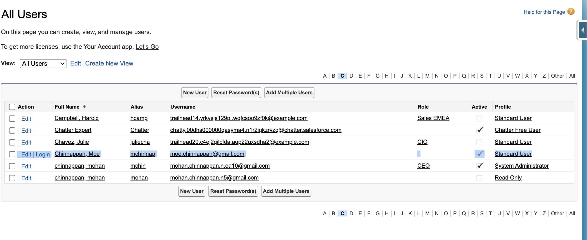

Salesforce User Creation Tool
Automate the creation of Salesforce users from a CSV file using the Salesforce REST API and Salesforce CLI.
Get StartedFeatures
CSV Input
Read user details from a CSV file to bulk-create users in Salesforce.
Salesforce CLI Integration
Automatically retrieve authentication credentials using the Salesforce CLI.
REST API Automation
Create users via Salesforce REST API with dynamic profile and role assignment.
Source Code
# user_create.py
# author: Mohan Chinnappan
# copyleft - fell free to use, modify, and distribute this code as you wish.
#-------------------------------------------------------------------
# This script creates Salesforce users from a CSV file using the Salesforce REST API.
import argparse
import csv
import json
import subprocess
import requests
from typing import Dict, List
from dataclasses import dataclass
@dataclass
class SalesforceUser:
"""Class to represent Salesforce user data."""
username: str
email: str
first_name: str
last_name: str
profile_name: str
role_name: str
is_active: bool = True
class SalesforceUserCreator:
"""Class to handle Salesforce user creation via REST API."""
def __init__(self, access_token: str, instance_url: str, api_version: str):
self.access_token = access_token
self.instance_url = instance_url
self.api_version = api_version
self.headers = {
"Authorization": f"Bearer {self.access_token}",
"Content-Type": "application/json"
}
def get_profile_id(self, profile_name: str) -> str:
"""Retrieve Profile ID by Profile Name."""
url = f"{self.instance_url}/services/data/v{self.api_version}/query"
query = f"SELECT Id FROM Profile WHERE Name = '{profile_name}'"
response = requests.get(url, headers=self.headers, params={"q": query})
if response.status_code == 200:
records = response.json().get("records", [])
return records[0]["Id"] if records else None
else:
raise Exception(f"Failed to fetch Profile ID for {profile_name}: {response.text}")
def get_role_id(self, role_name: str) -> str:
"""Retrieve User Role ID by Role Name."""
url = f"{self.instance_url}/services/data/v{self.api_version}/query"
query = f"SELECT Id FROM UserRole WHERE Name = '{role_name}'"
response = requests.get(url, headers=self.headers, params={"q": query})
if response.status_code == 200:
records = response.json().get("records", [])
return records[0]["Id"] if records else None
else:
raise Exception(f"Failed to fetch Role ID for {role_name}: {response.text}")
def create_user(self, user: SalesforceUser) -> Dict:
"""Create a single user in Salesforce."""
profile_id = self.get_profile_id(user.profile_name)
role_id = self.get_role_id(user.role_name) if user.role_name else None
user_data = {
"Username": user.username,
"Email": user.email,
"FirstName": user.first_name,
"LastName": user.last_name,
"Alias": user.first_name[:1].lower() + user.last_name[:7].lower(),
"ProfileId": profile_id,
"IsActive": user.is_active,
"TimeZoneSidKey": "America/Los_Angeles",
"LocaleSidKey": "en_US",
"EmailEncodingKey": "UTF-8",
"LanguageLocaleKey": "en_US"
}
if role_id:
user_data["UserRoleId"] = role_id
url = f"{self.instance_url}/services/data/v{self.api_version}/sobjects/User"
response = requests.post(url, headers=self.headers, json=user_data)
if response.status_code == 201:
return {"username": user.username, "status": "success", "id": response.json().get("id")}
else:
return {"username": user.username, "status": "error", "message": response.text}
def create_users_from_csv(self, csv_file: str) -> List[Dict]:
"""Create users from a CSV file."""
results = []
with open(csv_file, mode="r", encoding="utf-8") as file:
reader = csv.DictReader(file)
for row in reader:
user = SalesforceUser(
username=row["Username"],
email=row["Email"],
first_name=row["FirstName"],
last_name=row["LastName"],
profile_name=row["ProfileName"],
role_name=row["RoleName"],
is_active=row["IsActive"].lower() == "true"
)
result = self.create_user(user)
results.append(result)
return results
def get_salesforce_credentials(username: str) -> Dict:
"""Run Salesforce CLI command to get access token, instance URL, and API version."""
try:
cmd = ["sf", "force", "org", "display", "-u", username, "--json"]
result = subprocess.run(cmd, capture_output=True, text=True, check=True)
output = json.loads(result.stdout)
return {
"access_token": output["result"]["accessToken"],
"instance_url": output["result"]["instanceUrl"],
"api_version": output["result"]["apiVersion"]
}
except subprocess.CalledProcessError as e:
raise Exception(f"Failed to retrieve Salesforce credentials: {e.stderr}")
except KeyError as e:
raise Exception(f"Missing expected field in CLI output: {str(e)}")
def main():
parser = argparse.ArgumentParser(description="Create Salesforce users from a CSV file.")
parser.add_argument("--username", required=True, help="Salesforce org username or alias")
parser.add_argument("--input", required=True, help="Path to the input CSV file")
args = parser.parse_args()
# Get Salesforce credentials using CLI
credentials = get_salesforce_credentials(args.username)
creator = SalesforceUserCreator(
access_token=credentials["access_token"],
instance_url=credentials["instance_url"],
api_version=credentials["api_version"]
)
results = creator.create_users_from_csv(args.input)
for result in results:
if result["status"] == "success":
print(f"Created user {result['username']} with ID {result['id']}")
else:
print(f"Failed to create user {result['username']}: {result['message']}")
if __name__ == "__main__":
main()
How to Use
Follow these steps to create Salesforce users using the tool:
🔹 Step 1: Install Dependencies
Install the required Python package and Salesforce CLI:
pip install requests
Download and install the Salesforce CLI from Salesforce Developer Tools.
🔹 Step 2: Prepare the CSV File
Create a CSV file (e.g., users.csv) with the following structure:
Username,Email,FirstName,LastName,ProfileName,RoleName,IsActive
moe.chinnappan@gmail.com,moe.chinnappan@gmail.com,Moe,Chinnappan,Standard User,Sales Manager,true
Ensure ProfileName and RoleName match your Salesforce org's configuration.
🔹 Step 3: Run the Script
Execute the script with the Salesforce org username or alias and the CSV file path:
python create_salesforce_users.py --username my-org-alias --input users.csv
The script will create users and display success or error messages for each.
# make sure that you have the Salesforce CLI installed and authenticated using : sf force auth web login [-r test.salesforc.com] python user_create.py --username mohan.chinnappan.n.ea10@gmail.com --input input.csv Created user moe.chinnappan@gmail.com with ID 005Hs00000H6sZxIAJ
